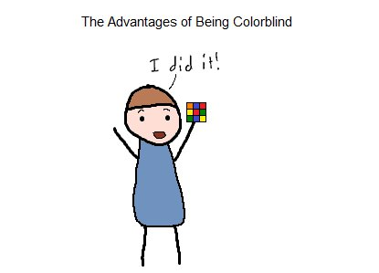

Il peut en effet poser problème dans certains cas, et limiter le recrutement pour des métiers où les couleurs sont importantes (transports publics, pilotes de l’armée, pompier, police…). Mais il présente également certains avantages méconnus : les daltoniens sembleraient avoir une meilleure vision nocturne.